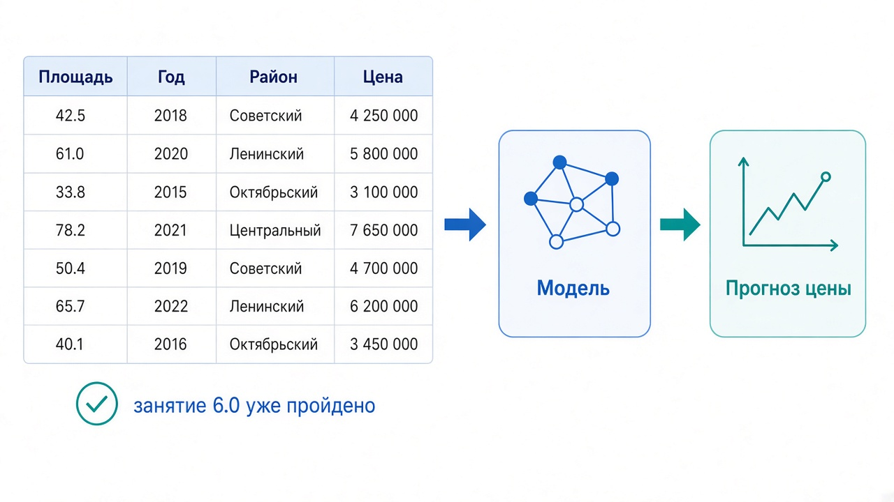

1. Введение (Introduction)
Повторите всё необходимое, чтобы пройти семь страниц этого блока. Они продолжают занятие 6.0: там лес уже предсказывает цену квартиры по полной таблице. Здесь таблица с дырами, текстовый район, конвейер, перекрёстная проверка, бустинг и утечка.

Что уже должно быть под рукой
Из занятия 6.0 достаточно помнить пять слов:
| Слово | Зачем оно здесь |
|---|---|
| Признак | Столбец, по которому модель судит. Площадь, год, комнаты, район |
| Цель | Столбец, который надо угадать. В квартирах это price |
fit |
Обучение на строках, где ответ уже известен |
predict |
Прогноз для строк, чьи ответы модель не должна подсматривать |
| MAE | Средний модуль промаха. Меньше — лучше |
Ноутбук запускают из корня курса, ядро — .venv. Иначе путь к файлу не найдётся или появится No module named sklearn.
.\.venv\Scripts\Activate.ps1
python -m pip install pandas scikit-learn xgboost
Ноутбук один на весь блок: module-7-0/lab70-prep.ipynb. Первая ячейка — markdown: ФИО, дата, заголовок «7. Пропуски, категории, конвейер, проверка, бустинг, утечка».
Два файла
Квартиры, на которых идут страницы 2–6:
| Файл | Что внутри |
|---|---|
module-7-0/data/flats_gaps.csv |
10000 квартир города М. Цена в тысячах рублей. Год пуст, если flat_id делится на 17 (588 строк). Комнаты пусты, если делится на 23 (434). Район пуст, если делится на 41 (243). Площадь и цена заполнены у всех |
Заявки на карту, страница 7. Это открытый учебный файл AER_credit_card_data.csv: 1319 строк, ответ card — одобрили заявку или нет.
import pandas as pd
flats = pd.read_csv("module-7-0/data/flats_gaps.csv")
# shape — (строки, столбцы). isna().sum() считает пустые ячейки по каждому столбцу.
print(flats.shape)
print(flats.isna().sum())
cards = pd.read_csv(
"module-7-0/data/AER_credit_card_data.csv",
true_values=["yes"],
false_values=["no"],
)
print(cards.shape)
print(cards.head(3))
Критерий. Квартиры: (10000, 7), пустых цен 0, пустых районов 243, лет 588, комнат 434. Заявки: (1319, 12), в head видны card, expenditure, share.
Дальше по страницам, по порядку. Каждая страница начинается с чтения файла, так что её можно открыть отдельно. Числа MAE сходятся, только если random_state и число деревьев те же, что в ячейке.